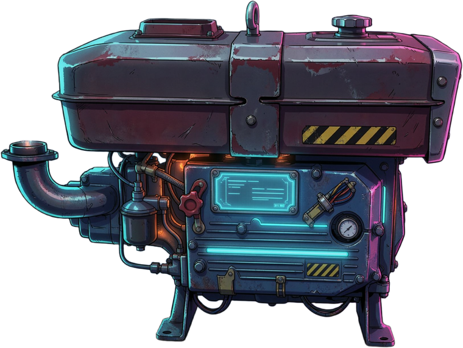

WALKING TRACTOR · S195 DIESEL · SOUND SIM

一个自娱自乐的小玩意儿：把 S195 单缸柴油机的“突突突”塞进手机，用 GPS 速度或油门滑条驱动转速， 配上摇把启动、排气浓烟和机械咔哒。没有联网、没有账号、没有广告，也不消耗你的流量。
本软件不收集个人信息；仅在你打开 GPS 跟速时于本机读取速度，不上传不存储。当前状态：未选择
本软件「手扶拖拉机声浪模拟器」（包名 com.jinlaoda.tractor）由个人开发者独立开发并运营， 是本政策的唯一责任主体。本政策独立成文，独立于任何其他协议或声明，与软件实际功能、权限调用一一对应。 联系方式：16386618@qq.com。
本软件没有账号体系，不需要注册或登录，不索取手机号、姓名、身份证、通讯录、短信、相册、相机、麦克风等任何信息； 也未接入任何统计、广告、推送类第三方 SDK，不做任何数据上传。
仅当你主动打开「GPS 跟速」时，本软件调用系统定位获取实时速度，用于在本机换算发动机转速与声浪。 速度数据不上传、不存储、不共享、不用于画像或广告。拒绝授权或关闭该开关后，用油门滑条即可完整使用全部功能。
仅在本机保存功能性偏好（着车次数、提示是否已展示、彩蛋状态、本次授权选择），不涉及个人信息， 随清除应用数据或卸载即刻删除，开发者无法读取。
本软件无注册登录、无账号体系，因此不存在账号注销流程。如需删除全部本地数据或撤回授权： 在系统设置中清除本应用数据 / 卸载应用，或在「系统设置 → 应用 → 权限」中关闭定位。 亦可发邮件至 16386618@qq.com 提出删除请求，我们将在 15 个工作日内处理并回复。
本软件不提供个性化推荐、不做用户画像、不投放任何广告、不进行定向推送。
本软件为声音模拟娱乐工具，不面向儿童设计，不收集儿童个人信息。若使用者为不满 14 周岁的儿童， 请在监护人陪同、同意并指导下使用，并注意控制音量与时长。监护人如发现儿童在未经同意的情况下使用， 可联系我们协助删除相关本地数据。
你有权查阅、更正、删除个人信息，撤回授权，或注销（本软件无账号，对应为清除本地数据）。 对本政策有疑问、意见或投诉，可通过上述邮箱联系，我们将在 15 个工作日内回复。
功能或权限发生变化时，本政策将同步更新并在应用内与本页面公布，注明更新日期；重大变更将再次征得你的同意。